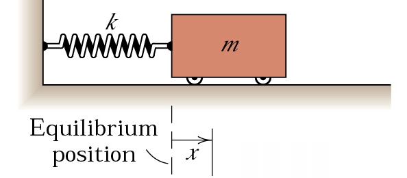
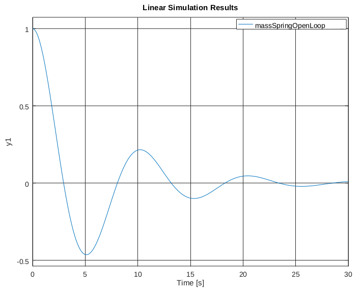
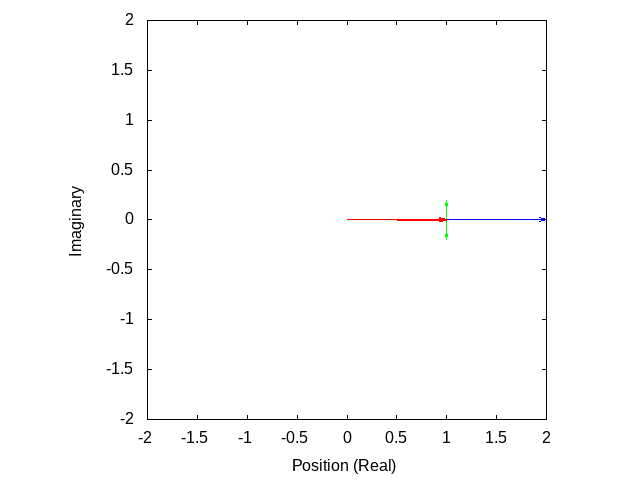
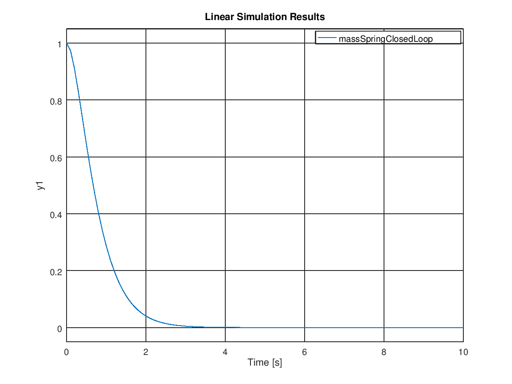

In Part 4, I covered how to make a state-space model of a system to make running simulations easy. In this post, I'll talk about how to use that model to make a controller for our system.
For this post, I'm going to use an example system that I haven't talked about before - A mass on a spring:

If we call \(p\) the position of the cart (we use \(p\) instead of \(x\), since \(x\) is the entire state once we're using a state space representation), then we find that the following equation describes how the cart will move:
\[ \dot{p} = -\frac{k}{m}p \]
Where \(p\) is position, \(k\) is the spring constant of the spring (how strong it is), and \(m\) is the mass of the cart.
You can derive this from Hooke's Law if you're interested, but the intuitive explanation is that the spring pulls back against the cart proportionally to how far it is away from the equilibrium state of the spring, but gets slowed down the heavier the cart is.
This describes a ideal spring, but one thing that you'll notice if you run a simulation of this is that it will keep on oscillating forever! We haven't taken into account friction. Taking into account friction gets us the following equation:
\[ \dot{p} = -\frac{k}{m}p - \frac{c}{m}\dot{p} \]
Where \(c\) is the "damping coefficient" - essentially the amount of friction acting on the cart.
Now that we have this equation, let's convert it into state space form!
This system has two states - position, and velocity:
\[ x = \begin{bmatrix} p \\ \dot{p} \end{bmatrix} \]
Since \(x\) is a vector of length 2, \(A\) will be a 2x2 matrix. Remember, a state space representation always takes this form:
\[ \dot{x} = Ax + Bu \]
We'll find \(A\) first:
\[ \begin{bmatrix} \dot{p} \\ \ddot{p} \end{bmatrix} = \begin{bmatrix} ? & ? \\ ? & ? \end{bmatrix} \begin{bmatrix} p \\ \dot{p} \end{bmatrix} \]
The way that I like to think about this is that each number in the matrix is asking a question - how does X affect Y? So, for example, the upper left number in the A matrix is asking "How does position affect velocity?". Position has no effect on velocity, so the upper left number is zero. Next, we can look at the upper right number. This is asking "How does velocity affect velocity?" Well, velocity is velocity, so we put a 1 there (since you need to multiply velocity by 1 to get velocity). If we keep doing this process, we get the following equation:
\[ \begin{bmatrix} \dot{p} \\ \ddot{p} \end{bmatrix} = \begin{bmatrix} 0 & 1 \\ -\frac{k}{m} & -\frac{c}{m} \end{bmatrix} \begin{bmatrix} p \\ \dot{p} \end{bmatrix} \]
For the sake of this post, I'll pick some arbitrary values for \(m\), \(k\), and \(c\): \(m = 1 \text{kg}\), \(k = 0.4 \text{N/m}\), \(c = 0.3 \text{N/m/s}\). Running a simulation of this system, starting at a position of 1 meter, we get the following response:

Notice that this plot shows two things happening - the position is oscillating, but also decreasing. There's actually a way to quantify how much the system will oscillate and how quickly it will converge to zero (if it does at all!). In order to see how a system will act, we look at the "poles" of the system. In order to understand what the poles of a system mean, we need to take a quick detour into linear algebra.
Our matrix \(A\) is actually a linear transformation. That means that if we multiply a vector by \(A\), we will get out a new, transformed vector. Multiplication and addition are preserved, such that \( A(x \times 5) = (Ax) \times 5 \) and \( A(x_1 + x_2) = Ax_1 + Ax_2 \). When you look at \(A\) as a linear transformation, you'll see that some vectors don't change direction when you apply the transform to them:

The vectors that don't change direction when transformed are called "eigenvectors". For this transform, the eigenvectors are the blue and pink arrows. Each eigenvector has an "eigenvalue", which is how much it stretches the vector by. In this example, the eigenvalue of the blue vectors is 3 and the eigenvalue of the pink vectors is 1.
So how does this all relate to state space systems? Well, the eigenvalues of the system (also called the poles of a system) have a direct effect on the response of the system. Let's look at our eigenvalues for our system above. Plugging the matrix into octave/matlab gives us:
>> eig([0 1;
-0.4/1 -0.3/1])
ans =
-0.15000 + 0.61441i
-0.15000 - 0.61441i
So we can see that we have two eigenvalues, both of which are complex numbers. What does this mean? Well, the real component of the number tells you how fast the system will converge to zero. The more negative it is, the faster it will converge to zero. If it is above zero, the system is unstable, and will trend towards infinity (or negative infinity). If it is exactly zero, the system is "marginally stable" - it won't get larger or smaller. The imaginary part of the number tells you how much the system will oscillate. For every positive imaginary part, there is a negative one of the same magnitude with the same real part, so it's just the magnitude of the imaginary part that determines how much the system will oscillate - the higher the magnitude of the imaginary part, the more the system will oscillate.
Why is this the case? Well, as it turns out, the derivative of a specific state is the current value of that state times the eigenvalue associated with that state. So, a negative eigenvalue will result in a derivative that drives the state to zero, whereas a positive eigenvalue will cause the state to increase in magnitude forever. A eigenvalue of zero will cause the derivative to be zero, which obviously results in no change to the state.
That explains real eigenvalues, but what about imaginary eigenvalues? Let's imagine a system that has two poles, at \(0+0.1i\) and \(0-0.1i\). Since this system has a real component of zero, it will be marginally stable, but since it has an imaginary component, it will oscillate. Here's a way of visualizing this system:

The blue vector is the position of the system. The red vectors are the different components of that position (the sum of the red vectors will equal the blue vector). The green vectors are the time derivatives of the red vectors. As you can see, the eigenvalue being imaginary causes each component of the position to be imaginary, but since there is always a pair of imaginary poles of the same magnitude but different signs, the actual position will always be real.
So, how is this useful? Well, it lets us look at a system and see what it's response will look like. But we don't just want to be able to see how the system will respond, we want to be able to change how the system will respond. Let's return to our mass on a spring:
\[ \begin{bmatrix} \dot{p} \\ \ddot{p} \end{bmatrix} = \begin{bmatrix} 0 & 1 \\ -\frac{k}{m} & -\frac{c}{m} \end{bmatrix} \begin{bmatrix} p \\ \dot{p} \end{bmatrix} \]
Now let's say that we can apply an arbitrary force \(u\) to the system. For this, we use our \(B\) matrix:
\[ \begin{bmatrix} \dot{p} \\ \ddot{p} \end{bmatrix} = \begin{bmatrix} 0 & 1 \\ -\frac{k}{m} & -\frac{c}{m} \end{bmatrix} \begin{bmatrix} p \\ \dot{p} \end{bmatrix} + \begin{bmatrix} 0 \\ \frac{1}{m} \end{bmatrix} u \]
Now, let's design a controller that will stop there from being any oscillation, and drive the system to zero much more quickly. Remember, all "designing a controller" means in this case is finding a matrix \(K\), where setting \( u = Kx \) will cause the system to respond in the way that you want it to. How do we do this? Well, it turns out that it's actually fairly easy to place the poles of a system wherever you want. Since we want to have no oscillation, we'll make the imaginary part of the poles zero, and since we want a fast response time, we'll make the real part of the poles -2.5 (this is pretty arbitrary). We can use matlab/octave to find what our K matrix must be to have the poles of the closed loop system be at -2.5:
pkg load control
A = [0 1;
-0.4/1 -0.3/1];
B = [0;
1/1];
place(A, B, [-2.5 -2.5])
Which gives us the output:
K =
5.8500 4.7000
So our K matrix is:
\[ K = \begin{bmatrix} 5.85 \\ 4.7 \end{bmatrix} \]
And running a simulation of the system with that K matrix gives us:

Much better! It converges in under five seconds with no oscillation, compared with >30 seconds with lots of oscillations for the open-loop response. But wait, if we can place the poles anywhere we want, and the more negative they are the faster the response, why not just place them as far negative as possible? Why not place them at -100 or -1000 or -100000? For that matter, why do we ever want our system to oscillate, if we can just make the imaginary part of the poles zero? Well, the answer is that you can make the system converge as fast as you want, so long as you have enough energy that you can actually apply to the system. In real life, the motors and actuators that are limited in the amount of force that they can apply. We ignore this in the state-space model, since it makes the system non-linear, but it's something that you need to keep in mind when designing a controller. This is also the reason that you might want some oscillation - oscillation will make you reach your target faster than you would otherwise. Sometimes, getting to the target fast is more important than not oscillating much.
So, that's how you design a state space controller with pole placement! There are also a ton of other ways to design controllers (most notably LQR) which I'll go into later, but understanding how poles determine the response of a system is important for any kind of controller.